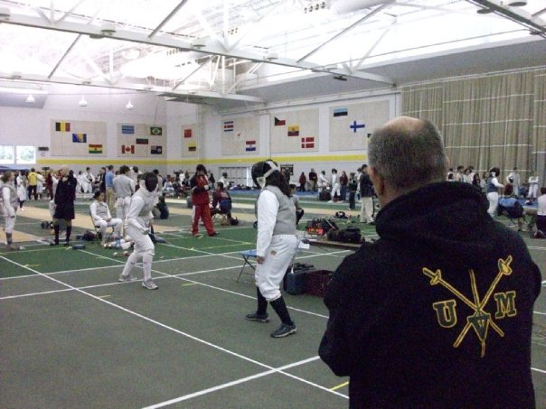
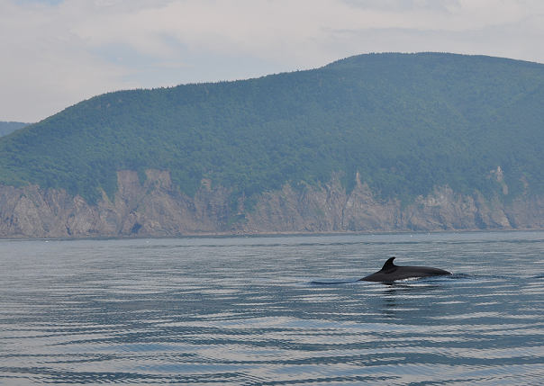

About Me
Where I'm From
I'm a lifelong resident of Washington, DC (hence the header photo I took of the Jefferson Memorial). Yes I was born here, and no, neither of my parents are politicians or work for the government.
Becoming a Developer
My career background, brief though it has been, is in education and the humanities. I received my Master's in Secondary Education (Social Studies) in the summer of 2013, but the lack of career options and a lifelong interest in and aptitude for technology has lead me to Dev Bootcamp.
Hobbies
I was a fencer in my undergraduate years, but due to an injury and lack of time to devote to it I haven't fenced much lately. Luckily fencing is easy to pursue at any stage of life.
The reason why it's so hard to find images of myself to use is that I'm usually the one taking the pictures. Another hobby of mine is photography. I took the following photo on a trip to Nova Scotia in the summer of 2011 and it's one of my favorites.
I also love music. Singing it, listening to it, playing it--I like it all. Unfortunately I don't know how to play too many musical instruments (or at least how to play them well). I'm fourth from the left in the top row of the following picture.

So Long, and Thanks for All the Fish
That's about all for now, but feel free to contact me through the icons in my footer. The easiest way to get in touch with me is probably through my e-mail: kdmcclin@gmail.com.